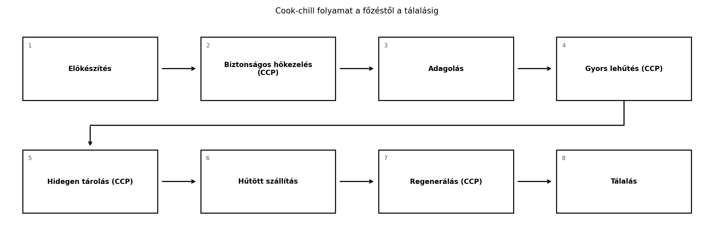

Egy rendezvénykonyhában 300 vendégnek kell egyszerre forró tálat adni, de a főzőkonyha egy másik épületben van. A séf előző napon párolt kacsacombot készít, azonnal lehűti, hidegen tárolja, másnap a tálalókonyhában regenerálja. Máskor egy kórházi központi konyhából szállítják az ebédet több kiosztóhelyre. A szakácsnak ismernie kell a zsírban való lassú hőkezelést, a gyorshűtéses ételgyártást és a mikrohullámú regenerálást.
Szemléletes kép. Képzelj el egy nagy tálcát forró rakott zöldséggel. Ha a tálcát egyszerűen betolod a hűtőbe, a széle hamar lehűl, de a közepe órákig langyos marad. Ilyenkor a baktériumok szaporodnak. A sokkolóhűtő (sokkoló) nagy sebességű hideg levegővel áramoltatja az ételt, ezért a tálca közepe is gyorsan biztonságos hőmérsékletre hűl.
A lenti ábra bal oldalán a hibás megoldás látható: a mély fazék (1) vastag rétegben, fedővel áll a normál hűtőben, a közepe meleg mag marad. A jobb oldalon a helyes: az ételt sekély GN-edényekbe (2) adagoljuk, a sokkolóhűtő polcain hézaggal helyezzük el (3), és a maghőmérőt (4) a réteg közepébe szúrjuk.
Figyeld meg, hogy a mély edényben a hő csak lassan jut ki, a közepe sokáig a veszélyes hőmérsékleti zónában (kb. 5–60 °C, ellenőrizendő: NÉBIH-útmutató / HACCP-terv) marad. A rétegvastagság (legfeljebb 5–8 cm) és a hűtési határidő az üzemi HACCP-terv szerint ellenőrizendő. A HTML-kiadásban a hibás és a helyes kép között válthatsz.
Definíció. A konfitálás (confit) olyan lassú, alacsony hőmérsékletű hőkezelés, amelyben az élelmiszert – leggyakrabban kacsacombot, libacombot, sertéslapockát – zsiradékban, jellemzően 80–90 °C-on, hosszú ideig hőkezeljük, amíg a hús omlóssá válik.
Definíció. A cook-chill (főzés–gyorshűtés) ételgyártási rendszer: az ételt biztonságos maghőmérsékletre hőkezeljük, majd nagyon gyorsan lehűtjük, hidegen tároljuk, szállítjuk, és a tálalás helyén regeneráljuk.
Definíció. A cook-freeze (főzés–fagyasztás) hasonló rendszer, de a gyors lehűtés után az ételt fagyasztva tároljuk, jellemzően –18 °C alatt (ellenőrizendő: üzemi HACCP-terv).
Definíció. A mikrohullámú regenerálás olyan újramelegítés, amelynél a mikrohullámok vizet, zsiradékot, cukrot tartalmazó élelmiszer-részeket melegítenek. A mikrohullámú sütő nem barnít, és az energia eloszlása egyenetlen, ezért regenerálásnál lefedést, keverést, átrendezést és pihentetést alkalmazunk.
A hőmérsékleti és időértékek üzemenként változhatnak, a saját
HACCP-terv, a NÉBIH-útmutató és a hatályos előírás a mérvadó. A könyvben
szereplő számok tanulási értékek (ellenőrizendő).
A konfitálás eredete a hús zsiradékban való tartósítására vezethető vissza. A mai konyhán elsősorban az állag és az íz miatt használjuk. Fontos, hogy a hagyományos, szobahőmérsékleten, zsiradékban való hosszú tárolást nem szabad automatikusan biztonságos tartósításnak tekinteni. A levegőtől elzárt zsiradékban oxigént nem kedvelő, spórás baktériumok is szaporodhatnak, ezért a konfitált ételt is gyorsan kell lehűteni, és hidegen kell tárolni.
Adagszám és adagsúly: 10 adag; adagsúly kb. 180 g comb + 150 g köret.
| Nyersanyag | Mennyiség 10 adagra | Megjegyzés |
|---|---|---|
| Kacsacomb | 10 db (kb. 2400 g) | bruttó tömeg, bőrös |
| Só | 36 g | a hús tömegének kb. 1,5 %-a |
| Fokhagyma | 20 g | zúzva, tisztítva |
| Kakukkfű | 5 g | friss vagy szárított |
| Babérlevél | 3 db | egész |
| Kacsazsír | 2000 g | a combok ellepéséhez |
| Burgonya (körethez) | 1500 g | tisztítva, kroketthez vagy püréhez |
| Tej (körethez) | 250 ml | allergén: tej |
| Vaj (körethez) | 100 g | allergén: tej |
| Szerecsendió | 1 g | ízlés szerint |
Eszközök és gépek: vastag falú sütőedény, maghőmérő, lyukas kanál, szűrő, GN-edények, sokkolóhűtő vagy jégfürdő, hűtőszekrény, külön vágódeszka nyers baromfihoz.
Kritikus pontok (összefoglaló): maghőmérséklet legalább 75 °C; gyorshűtés; hidegtárolás 0–3 °C; regenerálás legalább 75 °C (részletek lent; ellenőrizendő: HACCP-terv).
Allergén. A kacsacomb és a kacsazsír alapreceptje nem tartalmazza a 14 jelölésköteles allergént. A burgonyapüré tejet és vajat tartalmaz, ezért a tálaláskor jelölni kell: „allergén: tej”. Krokett körétnél glutén (liszt, morzsa), tojás és tej is jelölendő. Ha fokhagymás-tejszínes mártást adsz mellé, a tejszín is allergén.
Előkészítés
Elkészítés
Tálalás előtt
Minőségi követelmény. A bőr aranybarna, ropogós. A hús omlós, a szálak könnyen szétválnak. Az íz telt, fűszeres, a zsiradék nem égett.
Számítási példa. Tegyük fel, hogy 10 db kacsacomb bruttó tömege 2400 g. Sütés után a csontos, bőrös tálalási tömeg 1800 g. A hőkezelési veszteség:
Behelyettesítve:
A hőkezelési és tálalási veszteség 25 % (tanulási érték, az üzemi anyaghányad-gyűjteményben ellenőrizendő). Egy adag tálalási tömege így 180 g. Ha 200 g-os adagot szeretnénk, a bruttó szükséglet 10 · 200 g / 0,75 ≈ 2667 g.
A cook-chill akkor működik jól, ha a hőmérsékleti lánc folyamatos, és a hűtési, tárolási, szállítási, regenerálási hőmérsékleteket mérik és dokumentálják.
Szabály. A cook-chill folyamat nem csupán kényelmi technológia, hanem szabályozott, mérhető lépésekből álló élelmiszer-biztonsági rendszer.
A folyamat lépései:

Továbbvitt eredmény. A cook-chill folyamat fenti lépéseit kell használni a Hidegen sütés, új irányzatok és tálalási trendek alfejezetben is, amikor az új technológiák biztonsági határait értékeljük. A Büfé- és rendezvényételek tervezése és készítése alfejezetben ezt a folyamatot nagy adagszámú ételek ütemezésére használjuk.
A cook-freeze alkalmazható akkor, ha az ételt hosszabb ideig kell tárolni. A biztonságos hőkezelés után a gyors lehűtést követi a fagyasztás, jellemzően –18 °C alatti maghőmérséklet eléréséig (ellenőrizendő). A fagyasztva tárolt ételt hűtőben vagy mikrohullámon olvasztjuk, majd regeneráljuk. A fagyasztás miatt egyes ételek állaga változhat, például a főtt tészta, a krémleves, a habos ételek nem mindig alkalmasak erre a rendszerre. A rendszer előnye, hogy a napi termelést előre lehet ütemezni, és csökkenthető a hirtelen csúcsidőben végzett munka.
Figyelem. A lassú fagyasztás nagy jégkristályokat okoz, ami roncsolja a sejteket. Ezért a nagyüzemi konyha gyorsfagyasztót vagy sokkolófagyasztót használ, nem háztartási mélyhűtőt.
A mikrohullámú sütő a konyhában elsősorban regenerálásra, felengedésre, gyors zöldségpárolásra alkalmas. Nyers húsok teljes értékű hőkezelésére nem ajánlott, mert a hőeloszlás egyenetlen: a külső rész túlmelegedhet, a belső rész hideg maradhat.
Szabály. Mikrohullámú regenerálásnál az ételt le kell fedni, hogy a gőz egyenletesebben járja át. Félidőben keverni, átrendezni kell. A melegítés után 1–2 perc pihentetés szükséges, hogy a hőmérséklet eloszoljon. Minden adag maghőmérsékletét ellenőrizni kell, mielőtt a vendég elé kerül.
Kritikus pont. A regenerálás CCP. A veszély: a hideg foltban túlélhetnek a kórokozók. A felügyelet: az étel középpontjában mért maghőmérséklet. A kritikus határ: jellemzően legalább 75 °C 2 percig, de az üzemi HACCP-terv pontos értékét kell követni (ellenőrizendő). Helyesbítés: ha a hőmérséklet nem éri el a határt, tovább melegíteni, keverni, pihentetni, ismételten mérni. Dokumentálás: a regenerálási hőmérséklet és idő a tálalási naplóban vagy a HACCP-mérési lapon.
Allergén. A mikrohullámú regenerálás nem távolítja el az allergént. Ha az edény korábban tejes, tojásos ételt tartalmazott, a keresztszennyeződés átkerülhet az allergiás vendégnek a kért allergén nélkül készülő ételre. Az allergiás vendégnek szánt ételt külön edényben, letakarva, saját merőkanállal kezeljük.
A vendéglátó hálózatokban, kórházakban, iskolai közétkeztetésben gyakori a kétkonyhás rendszer. A központi konyhában nagy kapacitású gépek, elválasztott övezetek, hűtőraktárak és dokumentációs rendszer áll rendelkezésre. A tálalókonyhában az ételt regenerálják, kiegészítik, adagolják, és az edényeket, tálcákat elmosogatják.
A rendszer előnye:
A rendszer hátránya:
Szabály. A központi konyha és a tálalókonyha között hideg vagy fagyasztott láncban kell az ételt szállítani. Az átvételnél a tálalókonyha dolgozója méri az étel hőmérsékletét, ellenőrzi a lejárati időt, a csomagolás sértetlenségét és a dokumentációt.
Cél. Tanulj meg 80 adag csirkepaprikás példáján biztonságos cook-chill folyamatot ütemezni.
Eszközök és anyagok. 80 adag csirkepaprikás receptúrája, GN-edények, maghőmérő, sokkolóhűtő vagy jégfürdő, hűtőszekrény, szállítóedény, mikró vagy forró levegős regeneráló kemence, HACCP-mérési lap.
Biztonsági korlát. A sokkolóhűtő és a regeneráló berendezés használata tankonyhán, oktatói felügyelettel gyakorlandó. A forró ételt, gőzölgő edényt mindig hőálló védőeszközzel mozgasd. A gépet tisztítás előtt áramtalanítsd.
Higiéniai előkészület. Kézmosás, tiszta kötény, háló. A nyers csirke előkészítését külön vágódeszkán, kész ételtől elkülönítve végezd. A mérési feltétet fertőtlenítsd.
Lépések
A konfitált kacsacombnál a comb bőre aranybarna, ropogós. A hús omlós, szaftos, rostjai könnyen szétválnak, nem száradt. A zsiradék tiszta, nem égett, nem keserű. A cook-chill ételnél a regenerálás után mért maghőmérséklet érje el a HACCP-terv szerinti értéket. A szállított étel ne legyen savanyú szagú, ne legyen gázos, a csomagolása ne legyen felfúvódott, az edénye ne legyen sérült.
A konfitálás után a hús a zsiradék alatt lassan hűl le. Ha a forró zsiradékkal teli mély edényt beteszik a hűtőbe, a közepén sokáig meleg maradhat. Ok: a zsiradék szigetel, a hőátadás lassú. Helyes gyakorlat: sekély edény, sokkolóhűtő vagy jégfürdő, maghőmérő, hűtési idő dokumentálása.
A mikrohullámú regenerálás után azonnal tálalnak, mérés nélkül. Ok: a mikrohullámú sütő nem egyenletesen melegít, hideg foltok maradhatnak. Helyes gyakorlat: lefedés, keverés, pihentetés, maghőmérő, a határérték eléréséig további melegítés.
A központi konyhából érkező ételt nem ellenőrzik a tálalókonyhában. Ok: a dolgozó sürget, és nem méri a hőmérsékletet. Helyes gyakorlat: az átvételnél minden tálcánál hőmérsékletmérés, a sérült edény és a lejárt címke kiszűrése.
Egy kórházi tálalókonyhán a rakott zöldséget a központi konyhából hozták. Az étel doboza sértetlen volt, de a hűtőautó hőmérséklete a szállítás közben nem volt megfelelően beállítva. A tálalókonyhai dolgozó nem mérte meg az étel hőmérsékletét, mert úgy gondolta, hogy a doboz hideg. A regenerálás után a betegek közül többen hasi panaszokról számoltak be. Az ételmintából később kiderült, hogy a szállítás közben a hőmérséklet a veszélyes zónába emelkedett. Tanulság: a csomagolás hideg érzete nem bizonyítja a belső hőmérsékletet. Minden átvételnél mérni kell, és a hibás szállítást azonnal jelezni kell.
A válaszok a Megoldások elején találhatók.
1. feladat (A). Párosítsd a fogalmakat a mondatszereppel: konfitálás, cook-chill, cook-freeze, regenerálás.
2. feladat (A). Sorold fel a cook-chill folyamat öt legfontosabb mérési pontját.
3. feladat (B). Sorold helyes sorrendbe: adagolás, biztonságos hőkezelés, gyors lehűtés, regenerálás, hidegen tárolás, szállítás.
4. feladat (B). Egy konfitált kacsacombos tálaláshoz 12 db nyers comb bruttó tömege 2900 g, a kész, csontos bőrös tálalási tömeg 2200 g. Számítsd ki a veszteség százalékát, és írd fel a képletet is.
5. feladat (C). Hiba-e, ha a forró csirkepaprikást 10 cm mély, zárt, hűtőszekrénybe tett edényben hűtik? Indokold a veszélyt, és javasolj helyes megoldást.
6. feladat (D). Tervezd meg 80 adag pörkölt cook-chill folyamatát hőmérsékleti meghatározásokkal. A terv tartalmazza a hőkezelés, a hűtés, a tárolás, a szállítás és a regenerálás lépéseit a mérési illesztésekkel.
Önellenőrzés – válaszok
1. feladat (A). a) konfitálás, b) cook-chill, c) cook-freeze, d) regenerálás.
2. feladat (A). Hőkezelés maghőmérséklete, gyors lehűtési idő és hőmérséklet, hidegen tárolás hőmérséklete, szállítás hőmérséklete, regenerálás maghőmérséklete.
3. feladat (B). Biztonságos hőkezelés; adagolás; gyors lehűtés; hidegen tárolás; szállítás; regenerálás.
4. feladat (B). .
.
A veszteség körülbelül 24,1 %.
5. feladat (C). Igen. A mély edényben a hőközép sokáig meleg marad, a hűtő hőmérséklete is megemelkedhet. Helyes: az ételt sekély edénybe adagolni, sokkolóhűtőben vagy jégfürdővel gyorsan lehűteni, keverni, maghőmérővel mérni, dokumentálni.
6. feladat (D). A terv lényege: a pörköltet biztonságos maghőmérsékletre hőkezeljük, sekély edénybe adagoljuk, sokkolóban 5 °C alá hűtjük a HACCP-terv szerinti időn belül, 0–3 °C-on tároljuk, hűtött járművel szállítjuk, a tálalókonyhában maghőmérővel ellenőrzött regenerálást végzünk legalább 75 °C-on, legalább 2 percig (ellenőrizendő), majd forrón tálalunk.
A konfitálás zsiradékban, alacsony hőmérsékleten, hosszan végzett hőkezelés. A mai üzemi gyakorlatban a konfitált étel nem hagyható szobahőmérsékleten zsiradék alatt; a gyors lehűtés és a hűtött tárolás kötelező. A cook-chill rendszer lépései: előkészítés, biztonságos hőkezelés, adagolás, gyors lehűtés, hidegen tárolás, hűtött szállítás, regenerálás, tálalás. A cook-freeze ezt fagyasztott tárolással egészíti ki. A mikrohullámú regenerálás csak lefedéssel, keveréssel, pihentetéssel és maghőmérővel ellenőrizve biztonságos. A kritikus pontok a hőkezelés, a gyorshűtés, a hidegen tárolás és a regenerálás; mindegyiknél mérni és dokumentálni kell. A központi konyha és a tálalókonyha közötti hűtőláncot minden átvételkor ellenőrizni kell. A hőmérsékleti és időértékek tanulási irányértékek; az üzemi HACCP-terv, a NÉBIH-útmutató és a hatályos előírás a mérvadó. Továbbvitt eredmény. A cook-chill folyamat lépéseit kell használni a Hidegen sütés, új irányzatok és tálalási trendek és a Büfé- és rendezvényételek tervezése és készítése alfejezetekben.
A fejezet a klasszikus konyhatechnológiára, a NÉBIH élelmiszer-higiéniai útmutatóinak elveire, a 852/2004/EK rendelet HACCP-alapú gondolkodására és a gyártói berendezések használati utasításának logikájára épít. Ellenőrizendő: a pontos hűtési, tárolási, fagyasztási, regenerálási hőmérséklet- és időhatárok (0–3 °C, –18 °C, 75 °C regenerálási maghőmérséklet 2 percig, 90 perces lehűtési irányérték, 80–90 °C konfitálási hőmérséklet), a pácolási idő, a konfitált kacsacomb tömegvesztesége, az anyaghányadok, a közétkeztetési és HACCP-tárolási időkre vonatkozó belső szabályzat. A jogszabályok, NÉBIH-útmutatók és üzemi HACCP-tervek ellenőrzése a kiadás előtt kötelező.